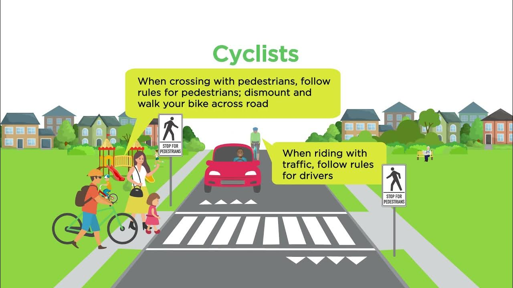

1. Stop at Red Signal
Always stop when you see the red signal. It indicates that vehicles must halt to allow crossing traffic or pedestrians.

Image: Red traffic signal, indicating stop.
2. Follow the Speed Limit
Speed limits are there to ensure the safety of all road users. Exceeding these limits can lead to accidents.
Image: Speed limit sign, indicating the maximum speed allowed on the road.
3. Use Seat Belts
Always wear your seat belt. It can protect you from serious injuries in case of an accident.

Image: Seat belt sign, reminding drivers and passengers to buckle up.
4. Follow Pedestrian Crossings
Allow pedestrians to cross at designated pedestrian crossings. This keeps them safe while crossing roads.
Image: Pedestrian crossing sign, indicating a safe crossing point for pedestrians.
5. Don’t Use Mobile Phones While Driving
Avoid using mobile phones while driving. It distracts you from the road and increases the risk of accidents.
Image: No mobile phones sign, reminding drivers to stay focused on the road.